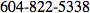

THE UNIVERSITY OF BRITISH COLUMBIA
Department of Electrical &
Computer Engineering
2332 Main Mall
Vancouver, B.C., V6T 1Z4
2332 Main Mall
Vancouver, B.C., V6T 1Z4
Consent Form
Principal Investigator
Dr. Sidney Fels, Associate Professor, Department of Electrical and Computer Engineering, University of British ColumbiaCo-Investigators
Matthew Fong, Xueqin Zhang, Gregor MillerProject Purpose and Procedures
This project is designed to understand how users utilize video interfaces for the purposes of learning, and certain video interfaces could help users navigate and study from video. You may stop your participation at any time.
Confidentiality
The data gathered from this app
will be anonymised for the purposes of subsequent analysis, preserving the participant confidentiality. Identifiable data will be stored securely in a password protected computer account. All data from individual participants will be coded so that their anonymity will be protected in any project reports and presentations that result from this work.
Contact Information About the Project
If you have any questions or require further information about the project you may contact Dr. Sidney Fels, .Contact for information about the rights of research participants
If you have any concerns or complaints about your rights as a research participant and/or your experiences while participating in this study, contact the Research Participant Complaint Line in the UBC Office of Research Ethics at 604-822-8598 or if long distance e-mail RSIL@ors.ubc.ca or call toll free 1-877-822-8598.
Consent
We intend for your participation in this project to be pleasant and stress-free. Your participation is entirely voluntary and you may refuse to participate or withdraw from the study at any time.
Your agreement indicates that you consent to participate in this project. You do not waive any legal rights by agreeing this consent form.